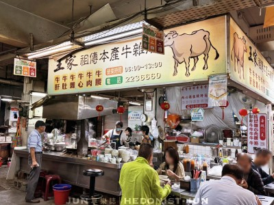
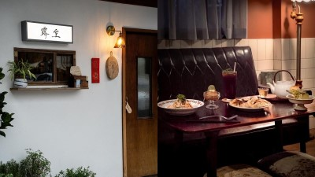

| 巷弄美食---王家祖傳本產牛雜湯 | |
從1920年就開始營業至今，到現在已經傳承4代了。早上6點就開門一路賣到中午1點多，是嘉義許多當地人的早午餐。站在攤位前第一眼看見的就是正在熬煮且塞滿各種本產牛食材的巨大鐵鍋。 高湯使用牛骨熬製，伴隨著牛雜與牛肉熬煮，湯色清澈、無過多油脂與雜質。一口喝下，可以品嚐到牛雜湯非常存粹的鮮甜與香氣。除了湯頭無可挑剃外，牛雜湯的內容也非常豐富，牛肚吃起來脆口，牛腸軟嫩，牛肉不柴。配上附贈的沾醬，讓人一口接著一口，湯如果喝完覺得不夠還可以免費續湯。 |
 |
| 咖香巡禮---露室茶坊 | |
一踏入茶館就彷彿穿越時光，置身於簡陋的瓦舍，彷彿回到老家的感覺。傢俱和擺設散發濃厚的古早味充滿著溫馨，讓人感受到濃厚的家的氣氛。 取名露室，有陋室之諧音。牆上還有店主自己寫的陋室銘語句，希望可以藉由一杯茶，串起各種交流。 這裡販售著自家茶園種植的阿里山烏龍與金萱茶，也有較少見的白茶與黃茶供選擇，也提供茶口味的甜點，以及鹹食、餐飲。 |
 |
| 嘉味手信---老楊方塊酥 | |
於1979年創立在嘉義市民國路上，品牌名稱是為了感念早期教導其麵食技術的楊姓師傅，方以「老楊」命名。創辦人戴總經理把台灣早期眷村燒餅，搖身一變飄香數十年「方塊酥」，其酥脆特殊的好口感，多層次餅皮的香氣，樸實甜美的風味，迅速打響「老楊」名號。 至今口味已超過50種以上，近年亦推出外表淋膜黑、白巧克力的巧克力方塊酥系列，深受許多年輕族群的熱愛，口感與滋味都令人驚艷，目前已成為台灣人年節送禮首選之一伴手禮。 創新精神融入傳統美食中，堅持的理念就是不管男女老少，都能品嚐到方塊酥的好滋味 |
 |